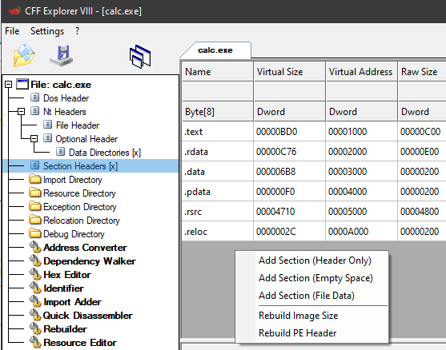
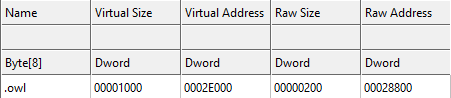
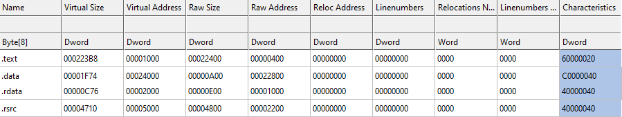

# Add section to PE file
To add a section to a PE file, you need to:
• add the new section info into the PE header
• update the PE header
◇ increase the number of sections by 1
◇ increase the SizeOfImage by the amount of data you've added
• write the added data at the PointerToRawData address and save the new file
In CFF Explorer, it gives you the option to
Add Section• just in the PE header
• in the PE header + add empty space
• in the PE header + create empty space + write data to empty space (add section + data)
To add a section just in the PE header, you just do the first step above and only add the new section info into the PE header.
To add a section + empty space, you add the new section info into the PE header and allocate extra space to the end of the file.
To add a section + create space + write data to section you do all of the above and write the data into the added empty space.
Links•
https://github.com/hMihaiDavid/addscn/tree/master/addscn•
https://www.codeproject.com/Articles/12532/Inject-your-code-to-a-Portable-Executable-file•
http://www.rohitab.com/discuss/topic/41911-pe-header-sections/•
http://www.rohitab.com/discuss/topic/41466-add-a-new-pe-section-code-inside-of-it/## Notes
### Aligning the Section
The inserted section data needs to be aligned.
Virtual data needs to be aligned to the system's default page size. (
0x1000 /
4096 bytes usually)
Raw data needs to be aligned to a value divisiable by 2 between 512 and 64k.
512k is default (
0x200 hex)
Here's a section I added to a PE file. I only added 8 bytes of data.
The virtual size has been aligned to
0x1000 bytes (4096 decimal)
And the raw size has been aligned to
0x200 bytes (512 decimal)
There's multiple methods of calculating aligned values (2 examples I found):
// Source: https://blogs.oracle.com/jwadams/macros-and-powers-of-two
#define P2ALIGNUP(x, align_value) (-(-(x) & -(align))) // align x up to the nearest multiple of align. align must be a power of 2.
#define P2ALIGNDOWN(x, align_value) ((x) & -(align)) // align x down to the nearest multiple of align. align must be a power of 2.
/*
Source here: http://www.rohitab.com/discuss/topic/41466-add-a-new-pe-section-code-inside-of-it/
Align a value to an address.
curr_value is the value to align.
align_value is how to align it (page size, etc.)
target_addr is where to align the value to.
*/
DWORD align(DWORD curr_value, DWORD align_value, size_t target_addr)
{
if (!(curr_value % align_value))
return target_addr + curr_value;
return target_addr + (curr_value / align_value + 1) * align_value;
}
// New section is aligned after last section in PE file
new_section->Misc.VirtualSize = align(data_size, pe_header->OptionalHeader.SectionAlignment, 0);
new_section->VirtualAddress = align(last_section->Misc.VirtualSize, pe_header->OptionalHeader.SectionAlignment, last_section->VirtualAddress);
new_section->SizeOfRawData = align(data_size, pe_header->OptionalHeader.FileAlignment, 0);
new_section->PointerToRawData = align(last_section->SizeOfRawData, pe_header->OptionalHeader.FileAlignment, last_section->PointerToRawData);
### Section Characteristics
•
https://github.com/hMihaiDavid/addscn/blob/ba01c4e69a8f8a5b1e8b9daa49bd93b621317b4a/addscn/addscn.cpp#L178Flags for section characteristics can be found here:
https://docs.microsoft.com/en-us/windows/win32/api/winnt/ns-winnt-image_section_headerThis characteristics example is from a 32bit
notepad.exe(apart from the .rdata section which is from 64bit calc.exe)
.textTypical
.text characteristics =
60000020IMAGE_SCN_CNT_CODE | IMAGE_SCN_MEM_READ | IMAGE_SCN_MEM_EXECUTE;Section contains code, section is executable, section is readable.
.dataTypical
.data characteristics =
C0000040IMAGE_SCN_CNT_INITIALIZED_DATA | IMAGE_SCN_MEM_READ | IMAGE_SCN_MEM_WRITE;Initialized data, readable, writable.
.rdata (read-only data)
Typical .rdata characteristics =
40000040IMAGE_SCN_CNT_INITIALIZED_DATA | IMAGE_SCN_MEM_READ;Initialized data, readable.
.rsrcTypical .rsrc characteristics =
40000040IMAGE_SCN_CNT_INITIALIZED_DATA | IMAGE_SCN_MEM_READ;Initialized data, readable.
Make it everything - 0xE00000E0A
0xE00000E0 flag sets all the things:
read/write/execute/code/initialized data/unitialized data
IMAGE_SCN_MEM_WRITE |
IMAGE_SCN_CNT_CODE |
IMAGE_SCN_CNT_UNINITIALIZED_DATA |
IMAGE_SCN_MEM_EXECUTE |
IMAGE_SCN_CNT_INITIALIZED_DATA |
IMAGE_SCN_MEM_READ
## Example Code
In this example I've created a new section, added data to it, and written the modified PE out to a new file.
/*
Open a PE file and add a section to it.
Write out the modified PE to a new file.
*/
#include <stdio.h>
#include <Windows.h>
// Source: https://blogs.oracle.com/jwadams/macros-and-powers-of-two
#define P2ALIGNUP(x, align_value) (-(-(x) & -(align))) // align x up to the nearest multiple of align. align must be a power of 2.
#define P2ALIGNDOWN(x, align_value) ((x) & -(align)) // align x down to the nearest multiple of align. align must be a power of 2.
/*
Source here: http://www.rohitab.com/discuss/topic/41466-add-a-new-pe-section-code-inside-of-it/
Align a value to an address.
curr_value is the value to align.
align_value is how to align it (page size, etc.)
target_addr is where to align the value to.
*/
DWORD align(DWORD curr_value, DWORD align_value, size_t target_addr)
{
if (!(curr_value % align_value))
return target_addr + curr_value;
return target_addr + (curr_value / align_value + 1) * align_value;
}
/*
Add a new section to the end of a PE file
and write the modified PE out to a new file.
Written as 1 large function because it makes resizing the PE buffer to store the new data easier.
0xE00000E0 characteristics:
IMAGE_SCN_MEM_WRITE |
IMAGE_SCN_CNT_CODE |
IMAGE_SCN_CNT_UNINITIALIZED_DATA |
IMAGE_SCN_MEM_EXECUTE |
IMAGE_SCN_CNT_INITIALIZED_DATA |
IMAGE_SCN_MEM_READ
Parameters:
char* pe_infile - file path to the PE file to open
char* pe_outfile - path of the new PE to write out
void* data_buf - the data to add to the section
DWORD data_size - the size of the data to add
char* new_sectionname - name of the new section
*/
BOOL AppendSectionToPEFile(char* pe_infile, char* pe_outfile, char* data_buf, DWORD data_size, char* new_sectionname)
{
BOOL ok = TRUE;
BOOL b = FALSE;
// Open target PE file & read into buffer
HANDLE h_infile = NULL;
HANDLE h_outfile = NULL;
DWORD pe_size = 0;
void* pe_buf = NULL;
h_infile = CreateFileA(pe_infile, GENERIC_READ | GENERIC_WRITE, 0, NULL, OPEN_EXISTING, FILE_ATTRIBUTE_NORMAL, NULL);
if (h_infile == INVALID_HANDLE_VALUE)
{
printf("[-] failed to open target PE file: %d \n", GetLastError());
ok = FALSE;
goto cleanup;
}
pe_size = GetFileSize(h_infile, NULL);
pe_buf = malloc(pe_size);
b = ReadFile(h_infile, pe_buf, pe_size, NULL, NULL);
if (b == FALSE)
{
printf("[-] failed to read file into buffer: %d \n", GetLastError());
ok = FALSE;
goto cleanup;
}
// Check it's a valid PE
PIMAGE_DOS_HEADER dos_header = (PIMAGE_DOS_HEADER)pe_buf;
PIMAGE_NT_HEADERS pe_header = (PIMAGE_NT_HEADERS)((size_t)pe_buf + dos_header->e_lfanew);
PIMAGE_SECTION_HEADER section = IMAGE_FIRST_SECTION(pe_header);
PIMAGE_SECTION_HEADER last_section = (IMAGE_FIRST_SECTION(pe_header) + pe_header->FileHeader.NumberOfSections) - 1;
PIMAGE_SECTION_HEADER new_section = last_section + 1;
if (dos_header->e_magic != IMAGE_DOS_SIGNATURE)
{
printf("[-] PE infile not a valid DOS file \n");
goto cleanup;
}
if (pe_header->Signature != IMAGE_NT_SIGNATURE)
{
printf("[-] infile is not a valid PE file \n");
goto cleanup;
}
// Write new section info into PE header
memset(new_section, 0, sizeof(IMAGE_SECTION_HEADER));
memcpy_s(new_section->Name, 8, new_sectionname, 8); // max section name length is 8 bytes
new_section->Misc.VirtualSize = align(data_size, pe_header->OptionalHeader.SectionAlignment, 0);
new_section->VirtualAddress = align(last_section->Misc.VirtualSize, pe_header->OptionalHeader.SectionAlignment, last_section->VirtualAddress);
new_section->SizeOfRawData = align(data_size, pe_header->OptionalHeader.FileAlignment, 0);
new_section->PointerToRawData = align(last_section->SizeOfRawData, pe_header->OptionalHeader.FileAlignment, last_section->PointerToRawData);
new_section->Characteristics = 0xE00000E0;
// Update PE header with +1 section and increased size
pe_header->FileHeader.NumberOfSections += 1;
pe_header->OptionalHeader.SizeOfImage = pe_header->OptionalHeader.SizeOfImage + data_size;
/*
Resize PE buffer to store new data
New size should be (pe_size + data_size after alignment)
(pe_size + data_size) doesn't allocate enough space.
Therefore, SizeOfRawData is used because it's aligned.
*/
DWORD final_pe_size = pe_size + new_section->SizeOfRawData;
void* tmp_pointer = realloc(pe_buf, final_pe_size);
if (tmp_pointer == NULL)
goto cleanup;
else
pe_buf = tmp_pointer;
// Write data into new section
void* rawdata_addr = (void*)((size_t)pe_buf + new_section->PointerToRawData);
memset(rawdata_addr, 0, new_section->SizeOfRawData);
memcpy_s(rawdata_addr, new_section->SizeOfRawData, data_buf, data_size);
// Write buffer out to new file
h_outfile = CreateFileA(pe_outfile, GENERIC_READ | GENERIC_WRITE, 0, NULL, CREATE_ALWAYS, FILE_ATTRIBUTE_NORMAL, NULL);
if (h_outfile == INVALID_HANDLE_VALUE)
{
printf("[-] failed to create output file: %d \n", GetLastError());
ok = FALSE;
goto cleanup;
}
DWORD bytes_written = 0;
b = WriteFile(h_outfile, pe_buf, final_pe_size, &bytes_written, NULL);
if (b == FALSE)
{
printf("[-] failed to write buffer out to file: %d \n", GetLastError());
ok = FALSE;
goto cleanup;
}
cleanup:
if (h_infile) CloseHandle(h_infile);
if (h_outfile) CloseHandle(h_outfile);
if (pe_buf) free(pe_buf);
return ok;
}
int main(void)
{
BOOL b = FALSE;
char pe_infile[] = "C:\\Users\\Bob\\Desktop\\tmp\\notepad32.exe";
char pe_outfile[] = "C:\\Users\\Bob\\Desktop\\tmp\\mo_sections.exe";
char section_name[8] = ".hey"; // max section name length is 8 bytes e.g. ".bigtest"
char* data = "much nightowl very code O_O";
b = AppendSectionToPEFile(pe_infile, pe_outfile, data, strlen(data), section_name);
if (b == FALSE)
return 1;
printf("[+] done! \n");
printf("[*] added %s to %s \n", section_name, pe_outfile);
return 0;
}